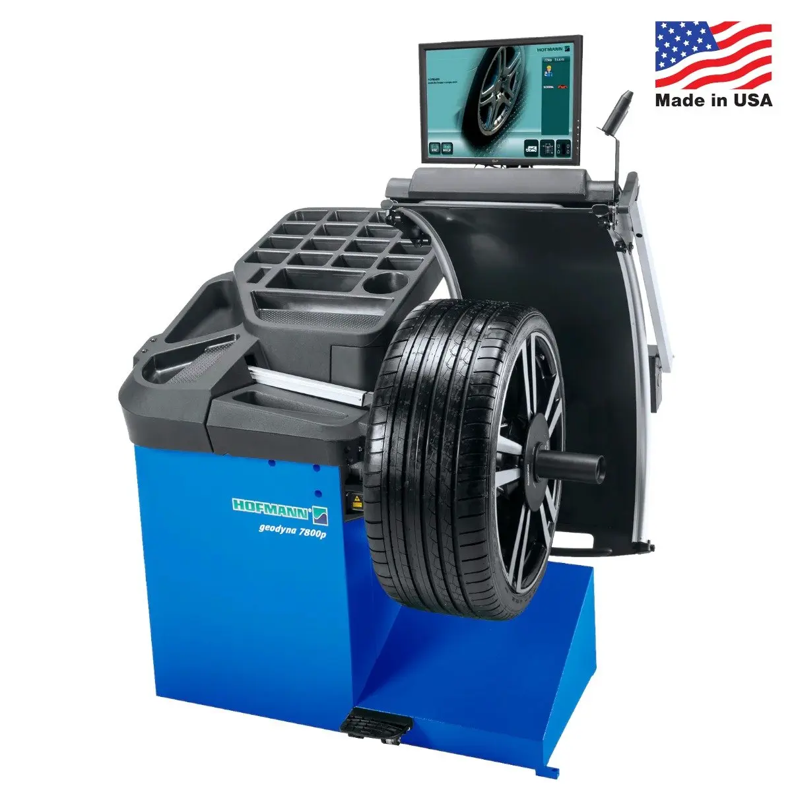

Balanceadora de Ruedas Hofmann Geodyna 7800-2P
Equilibradora de ruedas premium : Ideal para talleres, concesionarios y centros de servicio con alto volumen, la Geodyna 7800P incluye un monitor táctil, escáner de llantas para medición automática, y posicionamiento rápido de los contrapesos con puntero láser. · Alta productividad y precisión : Con una velocidad de medición de hasta 200 rpm y un tiempo de ciclo rápido de 4.5 segundos, ofrece una precisión de equilibrado de 1 g, compatible con ruedas de hasta 42" y 70 kg. · Tecnología avanzada : Incluye funciones como QuickBal, Smart Sonar para medición automática de anchos de llanta, y Power Clamp para fijación rápida de las ruedas, optimizando tiempos y garantizando resultados precisos.
- Capacidad
- 70 kg
- Altura de elevación
- —
- SKU
- 1010029
- Equilibradora de ruedas premium : Ideal para talleres, concesionarios y centros de servicio con alto volumen, la Geodyna 7800P incluye un monitor táctil, escáner de llantas para medición automática, y posicionamiento rápido de los contrapesos con puntero láser.
- Alta productividad y precisión : Con una velocidad de medición de hasta 200 rpm y un tiempo de ciclo rápido de 4.5 segundos, ofrece una precisión de equilibrado de 1 g, compatible con ruedas de hasta 42" y 70 kg.
- Tecnología avanzada : Incluye funciones como QuickBal, Smart Sonar para medición automática de anchos de llanta, y Power Clamp para fijación rápida de las ruedas, optimizando tiempos y garantizando resultados precisos.
Equilibradora de Ruedas Hofmann Geodyna 7800P
HofmannEquilibradora de ruedas premium para talleres y concesionarios de alto volumen, que ofrece alta productividad y precisión en el equilibrado de ruedas con tecnología avanzada como el escáner de llantas y Smart Sonar.
Características Principales
- Escáner de llantas para medición automática del diámetro, distancia y radios
- Posicionamiento rápido de contrapesos con puntero láser (easyWeight)
- Smart Sonar para medición automática de la anchura de la llanta
- Tiempo de ciclo rápido (4.5 segundos) y precisión de equilibrado de 1 g
- Protector ergonómico de rueda extraíble, ahorra espacio
- Dispositivo de fijación Power Clamp™ para sujeción rápida de la rueda
- Compatibilidad con ruedas de hasta 42” de diámetro y 70 kg de peso
Especificaciones Técnicas
Dimensiones de Trabajo
- Diámetro de la llanta: 14" - 42"
- Anchura de la llanta: 3" - 15.8"
- Distancia: 1" - 20"
- Peso máximo de la rueda: 70 kg
- Alimentación: 230 V monofásica, 1HP, 50/60 Hz
- Dimensiones (L x A x A): 1380 x 1020 x 1570 mm
- Peso neto: 150 kg
Accesorios Estándar
- Bandeja porta pesos ergonómica
- Iluminación de la llanta para facilitar la medición
- Herramientas para la colocación de contrapesos adhesivos
Características del Software
- Programas de optimización del desequilibrio
- Conectividad en red con software opcional
- Informe impreso opcional mediante impresora